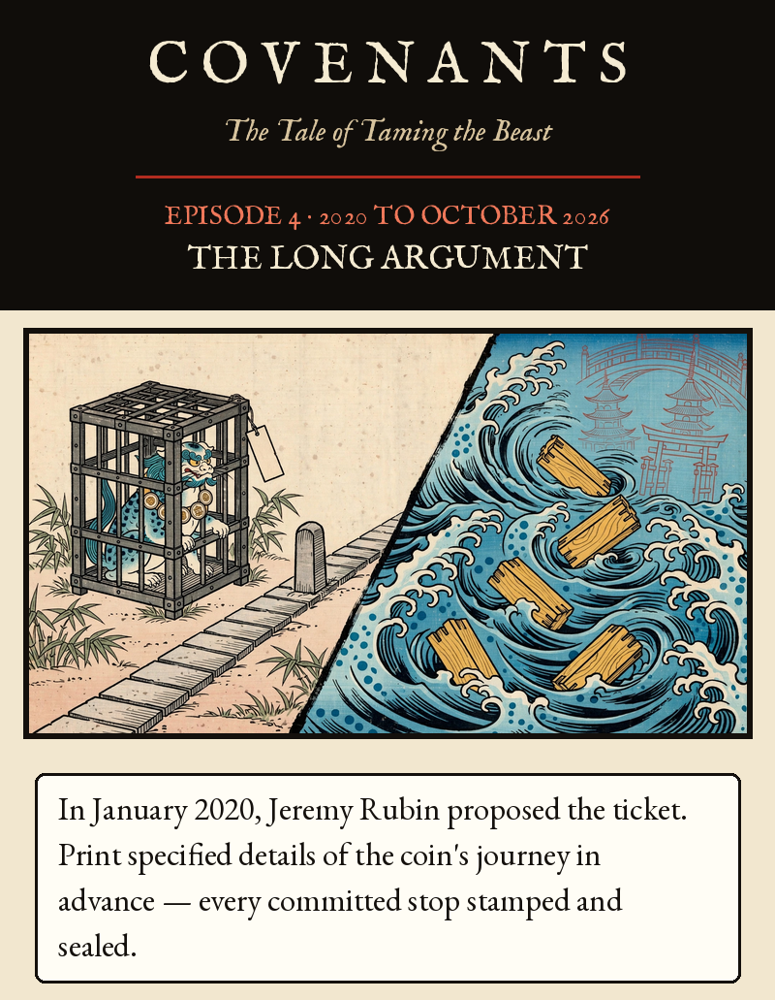
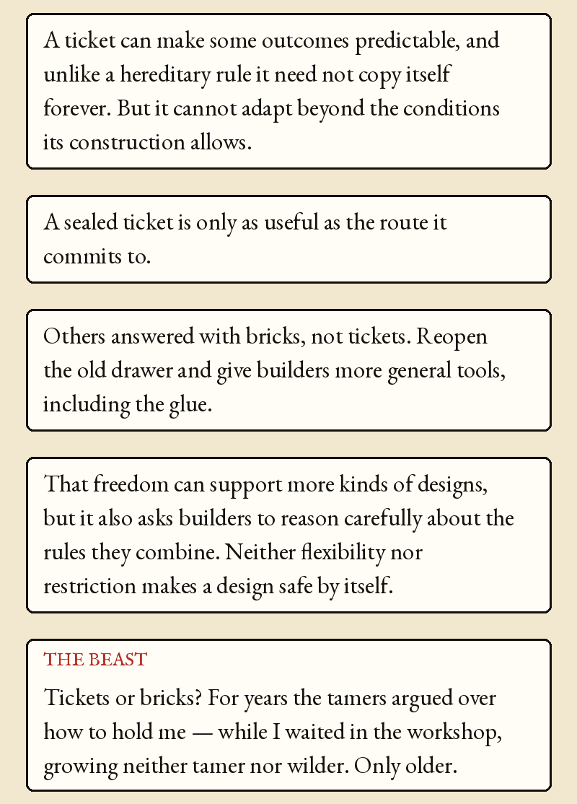
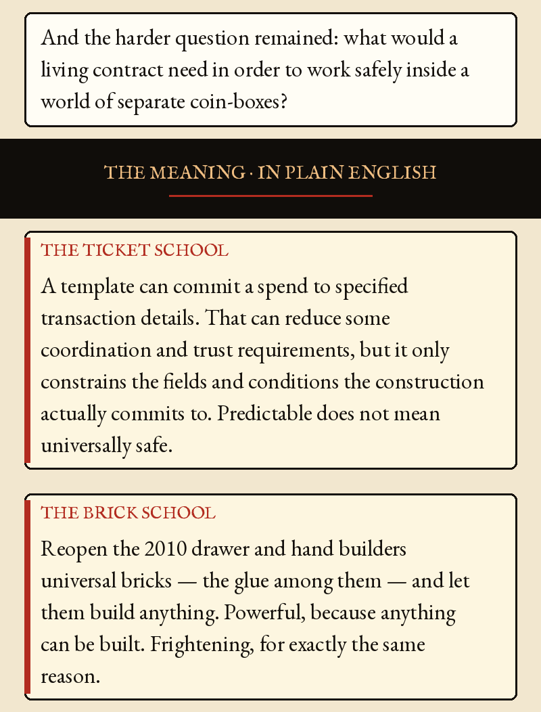
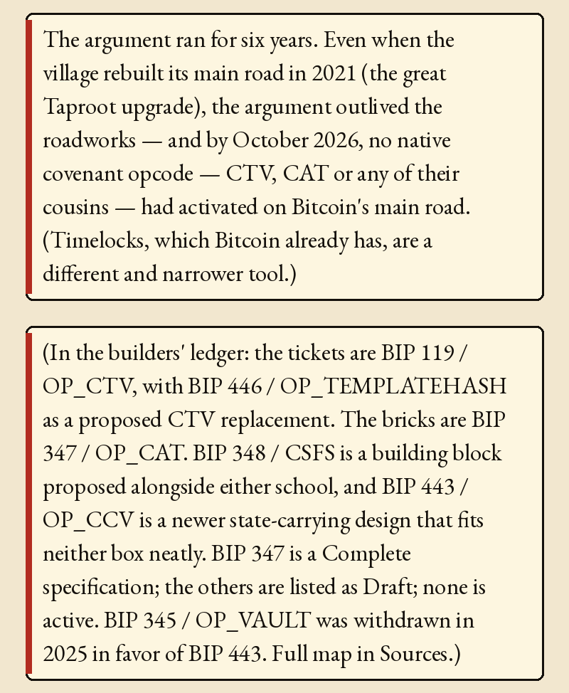
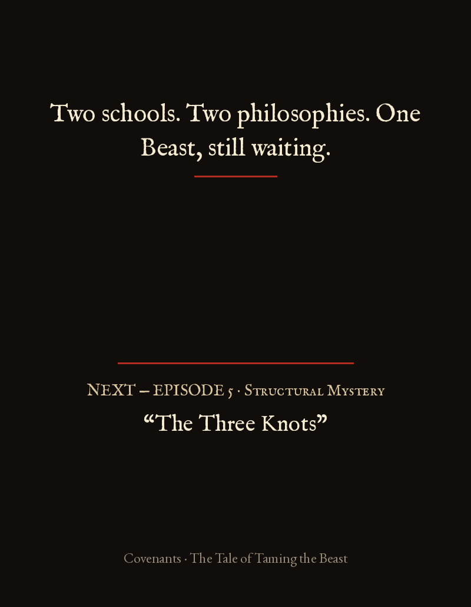

Episode 4 · The Long Argument





Episode 4 · The Long Argument — 2020 to October 2026
In January 2020, Jeremy Rubin proposed the ticket. Print specified details of the coin's journey in advance — every committed stop stamped and sealed. A ticket can make some outcomes predictable, and unlike a hereditary rule it need not copy itself forever. But it cannot adapt beyond the conditions its construction allows. A sealed ticket is only as useful as the route it commits to.
Others answered with bricks, not tickets. Reopen the old drawer and give builders more general tools, including the glue. That freedom can support more kinds of designs, but it also asks builders to reason carefully about the rules they combine. Neither flexibility nor restriction makes a design safe by itself.
THE BEAST: Tickets or bricks? For years the tamers argued over how to hold me — while I waited in the workshop, growing neither tamer nor wilder. Only older. And the harder question remained: what would a living contract need in order to work safely inside a world of separate coin-boxes?
THE MEANING · IN PLAIN ENGLISH
THE TICKET SCHOOL — A template can commit a spend to specified transaction details. That can reduce some coordination and trust requirements, but it only constrains the fields and conditions the construction actually commits to. Predictable does not mean universally safe.
THE BRICK SCHOOL — Reopen the 2010 drawer and hand builders universal bricks — the glue among them — and let them build anything. Powerful, because anything can be built. Frightening, for exactly the same reason.
The argument ran for six years. Even when the village rebuilt its main road in 2021 (the great Taproot upgrade), the argument outlived the roadworks — and by October 2026, no native covenant opcode — CTV, CAT or any of their cousins — had activated on Bitcoin's main road. (Timelocks, which Bitcoin already has, are a different and narrower tool.)
(In the builders' ledger: the tickets are BIP 119 / OP_CTV, with BIP 446 / OP_TEMPLATEHASH as a proposed CTV replacement. The bricks are BIP 347 / OP_CAT. BIP 348 / CSFS is a building block proposed alongside either school, and BIP 443 / OP_CCV is a newer state-carrying design that fits neither box neatly. BIP 347 is a Complete specification; the others are listed as Draft; none is active. BIP 345 / OP_VAULT was withdrawn in 2025 in favor of BIP 443. Full map in Sources.)
Two schools. Two philosophies. One Beast, still waiting.
BIP 119, CHECKTEMPLATEVERIFY (listed as Draft): https://bitcoin.org/bip/119/. BIP 347, OP_CAT in Tapscript (Complete specification since 1 Mar 2026, no activation): https://bitcoin.org/bip/347/. BIP 348 CHECKSIGFROMSTACK, BIP 443 OP_CHECKCONTRACTVERIFY and BIP 446 OP_TEMPLATEHASH are listed as Draft; BIP 345 OP_VAULT is Closed, withdrawn in 2025 in favor of BIP 443. Third-party trackers report a CTV activation client with a signaling window opened 30 Mar 2026 (timeout 30 Mar 2027) and negligible miner support; that is not activation. Statuses change, so recheck the BIPs index before publication: https://bitcoin.org/bips/.